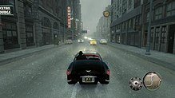

Set nearly a decade after the first game,Mafia II takes place between two distinct time periods—the mid-1940s, and the early 1950s—within the fictional American city of Empire Bay; the game's main story also includes an unnamed town within Sicily during the earlier time period, while the DLCs take place during the latter time period. The city is situated on the United States' eastern coastline and divided by a river, and consists of several districts, including wealthy suburbs, slums and tenement blocks for the city's different immigrant races, including Irish, African-American, Chinese, and Italian, and large-scale industrial complexes, with the city supported by a large port, a railroad station, a major prison outside its city limits, several parks, and a collection of shopping malls and supermarkets.
The game's main story sees the city divided between a number of criminal outfits, including three mafia families—the Falcone family, Vinci family, and Clemente family—a Chinese Triad outfit, the Irish Mob, and several street gangs. The city's design, including the architectural styles, cultures, public transportation and landmarks, are influenced from real-life American cities, including New York, Chicago, and Los Angeles, from within the two respective time periods used in the game.
In 1943, Sicilian immigrant Vito Scaletta is arrested during a robbery and opts to join the United States Army to avoid jail. He is captured by the Italians during Operation Husky but watches in awe as his would-be executioners surrender to the Allies on the orders of a local Mafia boss. After returning home to Empire Bay in early 1945 due to an injury he sustained, Vito reunites with his childhood friend Joe Barbaro, who supplies him with counterfeit discharge papers, and learns that his late father left his family in debt to a loan shark. He briefly works for his father's former employer Derek Pappalardo, who then recommends him to Clemente family caporegime Luca Gurino and made man Henry Tommasino due to his own connections with Joe. While he secures enough money to pay off his father's debt, Vito is arrested for the theft and sale of ration stamps and sentenced to prison, and the money goes to his mother's funeral.In 1951, Vito is released early after befriending Leo Galante, the consigliere of Don Frank Vinci. Reuniting with Joe, the pair work their way up the ranks of the Falcone family, led by Don Carlo Falcone and his underboss Eddie Scarpa, ultimately becoming made men and securing a better lifestyle, after Vito completes a job that involves killing Luca.
Not long after, learning that the Clementes are conducting drug operations, against the traditions of the Commission, Carlo orders Vito and Joe to assassinate Don Alberto Clemente. Following the hit, Henry approaches the Falcones to join them and is tasked to kill Leo. Although Vito is able to warn Leo and help him escape the city, the Falcones nevertheless welcome Henry into the family. Vito's fortunes improve after this, although his new lifestyle estranges him from his sister. To rebuild his house following a firebombing from the Irish mob, Vito joins Joe and Henry to profit from the sale of heroin bought from the city's Triads. However, after the Triads publicly execute Henry, Vito and Joe kill Triad enforcer Zhe Yun Wong in retaliation, despite his claims that Henry was a federal informant. In debt to loan shark Bruno Levine, whose money funded the heroin deal, the pair take on jobs to pay off the debt, including the assassination of retired mobster Tommy Angelo. Vito also kills Derek after learning he ordered his father's murder. When the Vinci family kidnaps Joe, Vito rushes to save him, soon learning their actions have sparked a massive gang war in Empire Bay.
After paying off his debt to Bruno, revealed to be the same loan shark his father was in debt to, Vito is called by Carlo to the planetarium for a meeting. On the way there, Vito is picked up by Leo and Triad boss Mr. Chu, who reveal that he and Joe are targeted by all major crime bosses in the city for the problems they caused, including Carlo; however, due to Vito saving his life, Leo promises to return the favour if he kills Carlo, which should end the gang war. At the planetarium, Vito discovers that Carlo ordered Joe to kill him, but the latter refuses and sides with Vito instead, helping him kill Carlo. Afterwards, Vito leaves with Leo to celebrate, while Joe is driven off in a separate car, leading Vito to ask where he is being taken. Leo reveals that their deal didn't cover Joe, much to Vito's shock, who watches helplessly as his friend is taken away to whatever fate awaits him.